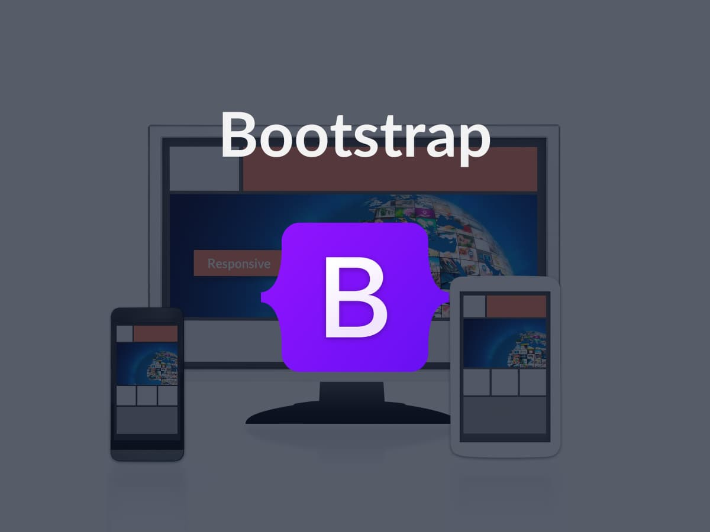
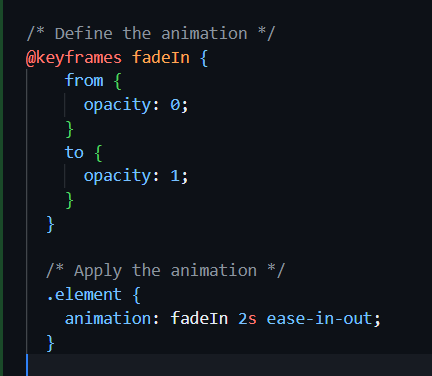

Introduction to Front-End Development - HTML, CSS, JavaScript
Front-end development is the art of crafting user-facing components of a website or application. It focuses on creating visually appealing and interactive interfaces using technologies like HTML, CSS, and JavaScript.
HTML (Hypertext Markup Language) provides the structure of the web page, CSS (Cascading Style Sheet) styles it and JavaScript makes it dynamic.
Think of it as the bridge between design and functionality—translating static mockups into dynamic, responsive web pages. It's not just about writing code; it's about creating seamless user experiences.
From understanding layout principles to enhancing performance and accessibility, front-end developers ensure users can engage with websites effortlessly. This field is constantly evolving, requiring creativity, technical skills, and a passion for user-centered design.
By: Chiemezie Uchenwoke
November 15, 2024
The Ultimate Guide to HTML5
HTML5 is the backbone of the web, powering the structure of virtually every webpage. As the latest version of the Hypertext Markup Language, HTML5 introduces robust features for developers and users alike.
HTML5 revolutionizes how we design and build web pages by introducing semantic tags like <header>, <footer>, <article>, and <section>. These tags not only make your code more readable but also improve accessibility for search engines and assistive technologies.
Multimedia integration is a breeze with HTML5. The <audio> and <video> tags simplify embedding media directly into web pages without relying on external plugins. For interactive graphics and animations, the <canvas> tag provides a powerful way to create dynamic experiences.
HTML5 also supports responsive design, allowing you to create adaptable layouts for devices of all sizes. Mastering HTML5 is essential for creating clean, maintainable, and user-friendly content structures.
By: Chiemezie Uchenwoke
November 15, 2024
Elevating Your Design with CSS
In the ever-evolving digital landscape, websites are accessed on a myriad of devices—smartphones, tablets, laptops, desktops, and even TVs. Ensuring a seamless and engaging user experience across all these platforms has become a necessity. This is where CSS (Cascading Style Sheets) steps in as a game-changer for modern web design.
CSS allows developers to go beyond basic layouts, crafting responsive, interactive, and visually captivating websites. With the right CSS techniques, you can elevate a website's design and functionality while ensuring that users, regardless of their device, have a smooth and consistent experience.
CSS is useful in the following ways:
(1) Responsive Layouts with Media Queries:
Media queries empower developers to tailor layouts for different screen sizes. By defining breakpoints, you can ensure your content adjusts dynamically, whether the user is on a compact mobile screen or a widescreen monitor. This ensures no more pinching, zooming, or horizontal scrolling.
(2) Modern Layout Techniques:
Flexbox and Grid
CSS Flexbox and Grid have revolutionized how we structure content. Flexbox excels in creating fluid, one-dimensional layouts, while CSS Grid shines for more complex, two-dimensional designs. Together, they make it easier to align elements, create dynamic spacing, and achieve pixel-perfect designs.
(3) Improved Accessibility
Designing with CSS ensures accessibility for users with diverse needs. Techniques like visible focus indicators, color contrast adjustments, and adaptable font sizes make websites inclusive and welcoming to all.
(4) Consistency Through Variables and Frameworks
CSS variables and frameworks like Tailwind and Bootstrap enable consistency across designs. By centralizing design tokens (like colors and fonts), developers can maintain a cohesive aesthetic throughout a project.
CSS is the backbone of user-centered, accessible, and visually stunning web designs. In a multi-device world, leveraging CSS to its full potential ensures your website stands out and performs flawlessly.
By: Chiemezie Uchenwoke
November 18, 2024
Tailwind CSS: Why Developers Love Utility-First Frameworks
In the world of web development, efficiency and precision are key. Tailwind CSS has rapidly gained popularity among developers for its utility-first approach, offering a streamlined way to build responsive and visually appealing user interfaces.
Unlike traditional CSS frameworks that provide pre-designed components, Tailwind CSS gives developers the freedom to create custom designs directly in their HTML. By leveraging utility classes, Tailwind allows for rapid prototyping, minimal stylesheet bloat, and flexibility.
Here are a few reasons why developers are raving about Tailwind CSS:
(1) Utility-First Design for Rapid Development
Tailwind CSS is packed with utility classes that make styling elements straightforward and efficient. Need to center content? Use flex, items-center, and justify-center. Want to add padding or margin? Classes like p-4 or m-2 are at your fingertips. This granular control speeds up development and reduces time spent writing custom CSS.
(2) Responsive Design Made Easy
With built-in responsive utilities, Tailwind CSS lets developers tailor designs for any screen size effortlessly. By using prefix-based classes like sm:, md:, or lg:, you can define styles for specific breakpoints directly in your markup, ensuring a seamless experience across devices.
(3) Customizable and Scalable
Tailwind's configuration file (tailwind.config.js) enables developers to customize everything from colors to spacing and typography. This makes it easy to align the framework with your project's design system, ensuring brand consistency while maintaining flexibility for scaling.
(4) Developer Experience
Tailwind CSS simplifies collaboration within teams by providing a shared vocabulary for design. It's intuitive, easy to learn, and removes the guesswork from styling elements.
Tailwind CSS is a game-changer for developers looking to build modern, responsive websites quickly and efficiently. Its utility-first approach empowers developers to focus on functionality and creativity, leaving the complexities of traditional CSS behind.
By: Chiemezie Uchenwoke
November 18, 2024
JavaScript Basics: Building Interactivity on the Web
JavaScript is the magic behind interactive websites. It lets you create web pages that respond to users' actions, making them feel alive and engaging.
Imagine a button that changes color when clicked, a form that tells you if you've entered something wrong before submitting, or a menu that slides open and closed. These are all made possible with JavaScript.
Why Learn JavaScript?
(1) Make Websites Interactive: While HTML gives your website structure and CSS makes it look good, JavaScript makes it interactive. It allows you to add animations, pop-ups, and other dynamic features.
(2) React to User Actions: JavaScript can “listen” for things like clicks, typing, or scrolling. For example, when you click a “Submit” button, JavaScript can check if all fields are filled before sending the form.
(3) Update Content Automatically: With JavaScript, you can create features like live search, where results update as you type, or a shopping cart that updates when you add an item.
Starting with the basics — like understanding data types, variables, loops, arrays, objects, functions and events—can open a world of possibilities. Once you know JavaScript, you'll be able to build websites that are not just functional but also fun and easy to use.
By: Chiemezie Uchenwoke
November 18, 2024
Debugging Like a Pro: Using Chrome DevTools for Efficient Development
Debugging is like detective work for developers—it's how you find and fix issues in your code. Chrome DevTools is a powerful tool that helps you solve coding problems quickly and efficiently.
What is Chrome DevTools?
Chrome DevTools is a built-in feature in the Google Chrome browser. It lets developers inspect their website's code, test features, and debug problems—all in real time.
Why Use Chrome DevTools?
(1) Inspect HTML and CSS: With DevTools, you can see your website's structure and styles. You can even edit them directly to test changes without affecting your actual code.
(2) Debug JavaScript Errors: DevTools highlights errors in your code and shows where they occur. You can pause your code, step through it line by line, and find the exact cause of issues.
(3) Optimize Performance: The "Performance" tab shows how your website loads and runs, helping you identify anything slowing it down.
(4) Test Responsiveness: The "Device Toolbar" lets you see how your site looks on different screen sizes, ensuring it's responsive.
How to Get Started?
Right-click on any element on your webpage and select "Inspect" to open DevTools. From there, you can explore tabs like "Elements" (for HTML/CSS) and "Console" (for JavaScript).
With Chrome DevTools, debugging doesn't have to feel frustrating. It's a skill every developer should master to write better, cleaner code. Happy debugging!
By: Chiemezie Uchenwoke
November 18, 2024
Building Responsive Websites with Bootstrap
In today's digital world, creating websites that look great on all devices—whether it's a smartphone, tablet, or desktop—is a must. Bootstrap is a popular framework that makes building responsive websites much easier, even for beginners.
What is Bootstrap?
Bootstrap is a free, open-source CSS framework designed to help developers create responsive, mobile-first websites. It comes with pre-designed components like buttons, navigation bars, and grids, allowing you to focus more on functionality and design without starting from scratch.
Why Use Bootstrap?
(1) Responsive Grid System: Bootstrap's grid system divides the webpage into flexible columns, making it easy to adjust layouts for different screen sizes.
(2) Ready-to-Use Components: It includes pre-styled elements like forms, carousels, and modals, so you don't have to design them yourself.
(3) Customizable: You can tweak Bootstrap's styles to match your project's unique look and feel.
(4) Cross-Browser Compatibility: Websites built with Bootstrap work seamlessly across different browsers.
Getting Started
(1) Add Bootstrap to your project by linking the CSS and JavaScript files from the Bootstrap CDN.
(2) Use the grid system to structure your layout. For example, col-sm-6 creates a column that spans half the screen on small devices.
(3) Explore Bootstrap components to add features like buttons, cards, or dropdowns.
By using Bootstrap, you can save time and ensure your website is responsive and professional-looking. Bootstrap is a valuable tool to add to your web development toolkit!

By: Chiemezie Uchenwoke
November 18, 2024
Version Control with Git and GitHub: A Beginner's Guide
As a developer, managing your code effectively is crucial, especially when working on complex projects or collaborating with others. This is where version control comes in—and Git and GitHub are two powerful tools to help you stay organized.
What is Version Control?
Version control is a system that keeps track of changes in your code over time. It allows you to save different versions of your project, undo mistakes, and collaborate with others without overwriting each other's work.
Git: Your Version Control Tool
Git is a free, open-source version control tool that runs on your computer. It tracks changes to your files and helps you manage them efficiently. With Git, you can:
(a) Save your progress by committing changes.
(b) Create branches to experiment with new features without affecting the main codebase.
(c) Merge branches once your feature is ready to go live.
GitHub: The Collaboration Platform
GitHub is an online platform that hosts your Git repositories, making it easier to share and collaborate with others. Here's what you can do with GitHub:
(a) Store your code securely in the cloud.
(b) Work with team members on the same project.
(c) Showcase your work to potential clients or employers.
Getting Started
(1) Install Git on your computer.
(2) Create a GitHub account and set up a repository.
(3) Learn basic Git commands like git add, git commit, and git push.
Mastering Git and GitHub not only boosts your productivity but also prepares you to collaborate effectively in a professional environment. It's a must have skill for every developer.
By: Chiemezie Uchenwoke
November 18, 2024
The Importance of Clean Code: Best Practices for Writing Readable Code
What is Clean Code?
Clean code is code that is easy to read, understand, and modify. It's like a well-organized book—clear and structured so that anyone reading it can quickly grasp its purpose and functionality.
Why is Clean Code Important?
(1) Readability: Clean code ensures that others (and future you!) can easily understand your work.
(2) Maintainability: With clear structure and organization, making updates or fixing bugs becomes far simpler.
(3) Collaboration: Clean code promotes seamless teamwork by making it easier for others to pick up and work on your project.
Best Practices for Writing Clean Code
(1) Use Meaningful Names: Choose descriptive names for variables, functions, and classes. For example, instead of x, use userAge.
(2) Keep It Simple: Avoid overly complex solutions when simpler ones will do. Strive for clarity over cleverness.
(3) Write Small Functions: Each function should do one thing well. Break down complex tasks into smaller, reusable functions.
(4) Consistent Formatting: Follow a consistent style for indentation, spacing, and brackets. Many developers use tools like Prettier for auto-formatting.
(5) Add Comments Sparingly: Use comments to explain why something is done, not what the code does (well-written code often speaks for itself).
By following these principles, you'll write code that stands the test of time. Clean code isn't just about technical skills; it's about respecting your future self and your team. Start incorporating these habits today, and watch your coding journey become smoother and more rewarding!
By: Chiemezie Uchenwoke
November 18, 2024
CSS Animations: Adding a Touch of Motion to Your Websites
What are CSS Animations?
CSS animations allow you to animate HTML elements without using JavaScript. They can be as simple as changing the background color or as complex as creating spinning icons or bouncing elements.
Why Use CSS Animations?
(1) Enhance User Engagement: Animations guide users and make your site feel interactive.
(2) Add Visual Appeal: Motion catches the eye and makes your design look polished and professional.
How to Create CSS Animations
There are two main ways to animate with CSS:
(1) Transitions: These allow smooth changes between states. For example, a button's background color can gradually change when hovered over.
(2) Keyframes: These define a sequence of animation steps. For instance, you can create a bouncing ball effect by moving an element up and down at specific points.
Example: A Simple Fade-In Animation

Tips for Effective Animations
(1) Keep it Subtle: Avoid overwhelming users with too many moving elements.
(2) Use Easing: Make animations feel natural by adjusting their speed over time (e.g., ease-in-out).
(3) Optimize for Performance: Test your animations to ensure they don't slow down the website, especially on mobile devices.
With CSS animations, you can create websites that captivate and guide users while maintaining a sleek and professional design.
By: Chiemezie Uchenwoke
November 18, 2024
What is the Future of Front-End Development? Emerging Trends in 2024
Front-end development is constantly evolving, and 2025 promises exciting advancements that will shape the way we build and interact with websites. Keeping up with these trends is essential for developers who want to stay relevant and create cutting-edge user experiences.
Top Trends to Watch in 2025
(1) AI-Powered Development Tools
Artificial Intelligence is transforming front-end development. Tools like GitHub Copilot and ChatGPT are becoming essential for streamlining coding processes, suggesting code snippets, and even assisting with debugging. AI-driven design tools are also making it easier to create responsive layouts and animations.
(2) Web3 and Decentralized Applications
The rise of Web3 is bringing blockchain-based applications into the mainstream. Front-end developers will need to understand how to integrate decentralized technologies and create user-friendly interfaces for crypto wallets, NFTs, and dApps.
(3) Advanced CSS Features
CSS is becoming more powerful with features like container queries and native CSS nesting. These tools allow for greater flexibility in responsive design, reducing the need for JavaScript in certain tasks.
(4) Motion Design and Micro-Interactions
Users expect dynamic, engaging experiences. The use of animations and micro-interactions, powered by libraries like Framer Motion or GSAP, will play a key role in keeping users engaged and guiding them through websites seamlessly.
(5) Server-Side Rendering and Static Site Generators
Frameworks like Next.js and Gatsby are growing in popularity as they combine fast performance with excellent SEO capabilities. The demand for server-side rendering (SSR) and static site generators (SSG) is on the rise, especially for content-heavy sites.
(6) Focus on Accessibility and Inclusivity
Accessibility is no longer optional—it's a standard. Developers are now integrating ARIA roles, semantic HTML, and automated testing tools to ensure that websites are usable for all users, including those with disabilities.
Preparing for the Future
To stay ahead, front-end developers need to:
(a) Continuously learn and adapt to new tools and frameworks.
(b) Embrace best practices for performance, accessibility, and security.
(c) Focus on delivering user-centric designs that work seamlessly across devices.
By: Chiemezie Uchenwoke
November 18, 2024
Web Accessibility: Ensuring Inclusivity for All Users
Web accessibility is about making websites and applications usable for everyone, including people with disabilities.
Why Accessibility Matters
Accessible design ensures that people with visual, auditory, cognitive, or motor impairments can interact with your website seamlessly. It improves usability for all users, as features like clear navigation and keyboard shortcuts benefit everyone. Furthermore, search engines prioritize accessible websites, making it an essential practice for better SEO.
Key Principles of Web Accessibility
(1) Perceivable: All content, including text, images, and multimedia, should be presented in ways that users can perceive. For example, use alt text for images so screen readers can describe them.
(2) Operable: Users should be able to navigate your site easily. This includes making sure all functionalities are accessible via a keyboard for those who can't use a mouse.
(3) Understandable: Your content should be clear and easy to understand. Use simple language and predictable navigation structures.
(4) Robust: Ensure your website is compatible with a wide range of assistive technologies, such as screen readers and speech recognition tools.
How to Implement Accessibility in Your Projects
(a) Use Semantic HTML: Proper use of headings (<h1>, <h2>), lists (<ul>, <ol>), and form elements (<label>, <input>) ensures better compatibility with assistive technologies.
(b) Add ARIA Attributes: These attributes enhance accessibility by providing additional information to screen readers. For example, aria-label can describe buttons that lack visible text.
(c) Test for Accessibility: Use tools like Lighthouse, Axe, or Wave to identify and fix accessibility issues.
The Impact of Accessibility
Building accessible websites benefits everyone. It expands your audience, enhances user experience, and ensures compliance with regulations. More importantly, it shows that you value inclusivity and are committed to creating an equal web for all.
By: Chiemezie Uchenwoke
November 18, 2024